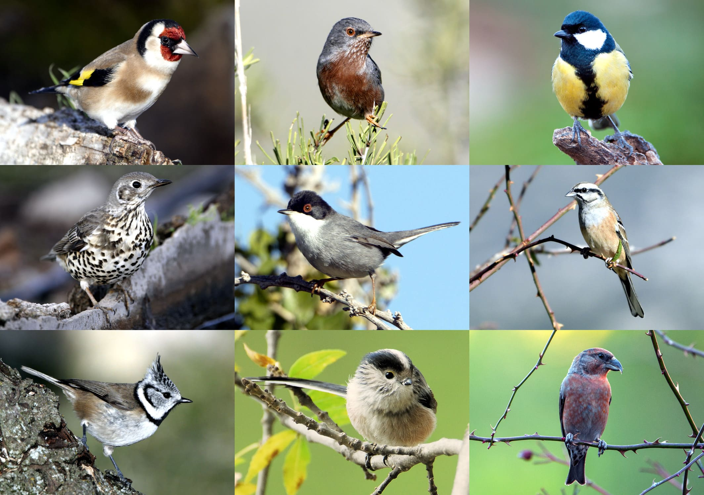

1 Data-sets
#> ##
#> ## jSDM R package
#> ## For joint species distribution models
#> ## https://ecology.ghislainv.fr/jSDM
#> ##
#> Loading required package: coda
#> This is boral version 1.9. If you recently updated boral, please check news(package = "boral") for the updates in the latest version.| Simulated | Mosquitos | Eucalypts | Frogs | Fungi | Birds | Mites | |
|---|---|---|---|---|---|---|---|
| n.site | 300 | 104 | 458 | 104 | 800 | 266 | 70 |
| n.species | 100 | 1 | 14 | 11 | 11 | 163 | 37 |
| n.latent | 2 | 2 | 2 | 2 | 2 | 2 | 2 |
| n.X.coefs | 3 | 14 | 8 | 4 | 13 | 4 | 12 |
| n.obs | 30000 | 104 | 6412 | 1144 | 8800 | 43358 | 2590 |
| n.param | 1500 | 329 | 1528 | 389 | 2576 | 1939 | 765 |
| n.mcmc | 35000 | 35000 | 35000 | 35000 | 35000 | 35000 | 35000 |

|

|

|

|
 |

|
2 Package boral
2.1 Simulated dataset
300 sites et 100 species with as parameters :
# Toy example : nsp <- 100 nsite <- 300 np <- 3 nl <- 2 seed <- 123 set.seed(seed) # Ecological process (suitability) x1 <- rnorm(nsite,0,1) x2 <- rnorm(nsite,0,1) X <- cbind(rep(1,nsite),x1,x2) # Simulation of parameters W <- cbind(rnorm(nsite,0,1),rnorm(nsite,0,1)) data=cbind (X,W) beta.target <- t(matrix(runif(nsp*np,-2,2), byrow=TRUE, nrow=nsp)) l.zero <- 0 l.diag <- runif(2,0,2) l.other <- runif(nsp*2-3,-2,2) lambda.target <- t(matrix(c(l.diag[1],l.zero,l.other[1],l.diag[2],l.other[-1]), byrow=T, nrow=nsp)) param.target <- rbind(beta.target,lambda.target) param.target=rbind(beta.target,lambda.target) V_alpha.target=0.5 V=1 alpha.target <- rnorm(nsite,0,sqrt(V_alpha.target)) # Simulation of response data with probit link probit_theta=X %*% beta.target + W %*% lambda.target + alpha.target e=matrix(rnorm(nsp*nsite,0,sqrt(V)),nsite,nsp) Z_true <- probit_theta + e Y=matrix (NA, nsite,nsp) for (i in 1:nsite){ for (j in 1:nsp){ if ( Z_true[i,j] > 0) {Y[i,j] <- 1} else {Y[i,j] <- 0} } }
library(boral) T1<-Sys.time() mod_boral_sim <- boral(y=Y, X=X[,-1], lv.control=list(num.lv=nl), family="binomial", row.eff="random", hypparams=c(100,10,100,30), mcmc.control=list(n.burnin=10000,n.iteration=15000, n.thin=5,seed=123)) T2<-Sys.time() T_boral_sim=difftime(T2, T1) # Predicted probit(theta) probit_theta_pred_sim <- mod_boral_sim$row.coefs$ID1$mean + X[,-1] %*% t(mod_boral_sim$X.coefs.mean) + mod_boral_sim$lv.coefs.mean[,"beta0"] + mod_boral_sim$lv.mean%*%t(mod_boral_sim$lv.coefs.mean[,-1]) # RMSE SE=(probit_theta-probit_theta_pred_sim)^2 RMSE_boral_sim=sqrt(sum(SE/(nsite*nsp))) # Deviance logL=0 for (i in 1:nsite){ for (j in 1:nsp){ theta <- pnorm(probit_theta_pred_sim[i,j]) logL=logL + dbinom(Y[i,j],1,theta,1) } } Deviance_boral_sim <- -2*logL save(np, nl, nsp, nsite, beta.target, lambda.target, alpha.target, V_alpha.target, X, W, probit_theta, Z_true, Y, T_boral_sim, mod_boral_sim, probit_theta_pred_sim, RMSE_boral_sim, Deviance_boral_sim, file="jSDM_boral_cache/boral_simulation.RData")
load(file="jSDM_boral_cache/boral_simulation.RData") ## Fixed species effect beta par(mfrow=c(1,2)) plot(t(beta.target), cbind(mod_boral_sim$lv.coefs.mean[,1],mod_boral_sim$X.coefs.mean), xlab="beta target", ylab="means of estimated beta") abline(a=0,b=1,col='red') ## factor loadings lambda_j plot(t(lambda.target),mod_boral_sim$lv.coefs.mean[,-1], xlab="lambda target", ylab="means of estimated lambda") abline(a=0,b=1,col='red') ## Latent variable W par(mfrow=c(1,2)) for (l in 1:nl) { plot(W[,l],mod_boral_sim$lv.mean[,l], main=paste0("Latent variable W_", l), xlab="obs", ylab="fitted") abline(a=0,b=1,col='red') } ## alpha par(mfrow=c(1,1)) plot(alpha.target, mod_boral_sim$row.coefs$ID1$mean, xlab="obs", ylab="fitted") abline(a=0,b=1,col='red') points(V_alpha.target, mod_boral_sim$row.sigma$ID1["mean"], pch=17, col='blue', cex=1.5) legend("topleft", legend="V_alpha", pch=17, col='blue') title("Random site effect alpha and its variance") ## Prediction # probit_theta_pred plot(probit_theta,probit_theta_pred_sim, main="probit(theta)", xlab ="obs", ylab="fitted") abline(a=0,b=1,col='red')


 ## Mosquitos dataset
## Mosquitos dataset
# Import center and reduce Mosquito dataset data(mosquitos, package="jSDM") head(mosquitos) Env_Mosquitos <- mosquitos[,17:29] Env_Mosquitos <- cbind(scale(Env_Mosquitos[,1:4]), Env_Mosquitos[,5:13]) PA_Mosquitos <- mosquitos[,1:16] # Fit the model T1 <- Sys.time() mod_boral_Mosquitos <- boral(y=PA_Mosquitos, X=Env_Mosquitos, lv.control=list(num.lv=2), family="binomial", row.eff="random", hypparams=c(100,10,100,30), mcmc.control=list(n.burnin=10000,n.iteration=15000, n.thin=5,seed=123)) T2 <- Sys.time() T_boral_Mosquitos <- difftime(T2,T1) # Predicted probit(theta) probit_theta_pred_Mosquitos <- mod_boral_Mosquitos$row.coefs[[1]]$mean + as.matrix(Env_Mosquitos) %*% t(mod_boral_Mosquitos$X.coefs.mean) + mod_boral_Mosquitos$lv.coefs.mean[,"beta0"] + mod_boral_Mosquitos$lv.mean%*% t(mod_boral_Mosquitos$lv.coefs.mean[,-1]) # Deviance logL=0 for (i in 1:nrow(PA_Mosquitos)){ for (j in 1:ncol(PA_Mosquitos)){ theta <- pnorm(probit_theta_pred_Mosquitos[i,j]) logL=logL + dbinom(PA_Mosquitos[i,j],1,theta,1) } } Deviance_boral_Mosquitos <- -2*logL save(T_boral_Mosquitos, mod_boral_Mosquitos, probit_theta_pred_Mosquitos, Deviance_boral_Mosquitos, file="jSDM_boral_cache/boral_Mosquitos.RData")
2.2 Eucalypts dataset
# Import center and reduce Eucalypts dataset data(eucalypts, package="jSDM") head(eucalypts) Env_Eucalypts <- cbind(scale(eucalypts[,c("Rockiness","VallyBotFlat","PPTann", "cvTemp","T0")]),eucalypts[,c("Sandiness","Loaminess")]) PA_Eucalypts <- eucalypts[,1:12] # Fit the model T1 <- Sys.time() mod_boral_Eucalypts <- boral(y=PA_Eucalypts, X=Env_Eucalypts, lv.control=list(num.lv=2), family="binomial", row.eff="random", hypparams=c(100,10,100,30), mcmc.control=list(n.burnin=10000,n.iteration=15000, n.thin=5,seed=123)) T2 <- Sys.time() T_boral_Eucalypts <- difftime(T2,T1) # Predicted probit(theta) probit_theta_pred_Eucalypts <- mod_boral_Eucalypts$row.coefs[[1]]$mean + as.matrix(Env_Eucalypts) %*% t(mod_boral_Eucalypts$X.coefs.mean) + mod_boral_Eucalypts$lv.coefs.mean[,"beta0"] + mod_boral_Eucalypts$lv.mean%*% t(mod_boral_Eucalypts$lv.coefs.mean[,-1]) # Deviance logL=0 for (i in 1:nrow(PA_Eucalypts)){ for (j in 1:ncol(PA_Eucalypts)){ theta <- pnorm(probit_theta_pred_Eucalypts[i,j]) logL=logL + dbinom(PA_Eucalypts[i,j],1,theta,1) } } Deviance_boral_Eucalypts <- -2*logL save(T_boral_Eucalypts, mod_boral_Eucalypts, probit_theta_pred_Eucalypts, Deviance_boral_Eucalypts, file="jSDM_boral_cache/boral_Eucalypts.RData")
2.3 Frogs dataset
# Import center and reduce Frogs dataset data(frogs, package="jSDM") head(frogs) Env_Frogs <- cbind(scale(frogs[,"Covariate_1"]),frogs[,"Covariate_2"], scale(frogs[,"Covariate_3"])) colnames(Env_Frogs) <- colnames(frogs[,1:3]) PA_Frogs <- frogs[,4:12] # Fit the model T1 <- Sys.time() mod_boral_Frogs <- boral(y=PA_Frogs, X=Env_Frogs, lv.control=list(num.lv=2), family="binomial", row.eff="random", hypparams=c(100,10,100,30), mcmc.control=list(n.burnin=10000, n.iteration=15000, n.thin=5,seed=123)) T2 <- Sys.time() T_boral_Frogs <- difftime(T2,T1) # Predicted probit(theta) probit_theta_pred_Frogs <- mod_boral_Frogs$row.coefs[[1]]$mean + as.matrix(Env_Frogs) %*% t(mod_boral_Frogs$X.coefs.mean) + mod_boral_Frogs$lv.coefs.mean[,"beta0"] + mod_boral_Frogs$lv.mean%*%t(mod_boral_Frogs$lv.coefs.mean[,-1]) # Deviance logL=0 for (i in 1:nrow(PA_Frogs)){ for (j in 1:ncol(PA_Frogs)){ theta <- pnorm(probit_theta_pred_Frogs[i,j]) logL=logL + dbinom(PA_Frogs[i,j],1,theta,1) } } Deviance_boral_Frogs <- -2*logL save(T_boral_Frogs, mod_boral_Frogs, probit_theta_pred_Frogs, Deviance_boral_Frogs, file="jSDM_boral_cache/boral_Frogs.RData")
2.4 Fungi dataset
# Import center and reduce fungi dataset data(fungi, package="jSDM") Env_Fungi <- cbind(scale(fungi[,c("diam","epi","bark")]), fungi[,c("dc1","dc2","dc3","dc4","dc5", "quality3","quality4","ground3","ground4")]) colnames(Env_Fungi) <- c("diam","epi","bark","dc1","dc2","dc3","dc4","dc5", "quality3","quality4","ground3","ground4") PA_Fungi <- fungi[,c("antser","antsin","astfer","fompin","hetpar","junlut", "phefer","phenig","phevit","poscae","triabi")] # Fit the model T1 <- Sys.time() mod_boral_Fungi <- boral(y=PA_Fungi, X=Env_Fungi, lv.control=list(num.lv=2), family="binomial", row.eff="random", hypparams=c(100,10,100,30), mcmc.control=list(n.burnin=10000, n.iteration=15000, n.thin=5,seed=123)) T2 <- Sys.time() T_boral_Fungi <- difftime(T2,T1) # Predicted probit(theta) probit_theta_pred_Fungi=mod_boral_Fungi$row.coefs[[1]]$mean + as.matrix(Env_Fungi) %*% t(mod_boral_Fungi$X.coefs.mean) + mod_boral_Fungi$lv.coefs.mean[,"beta0"] + mod_boral_Fungi$lv.mean%*%t(mod_boral_Fungi$lv.coefs.mean[,-1]) # Deviance logL=0 for (i in 1:nrow(PA_Fungi)){ for (j in 1:ncol(PA_Fungi)){ theta <- pnorm(probit_theta_pred_Fungi[i,j]) logL=logL + dbinom(PA_Fungi[i,j],1,theta,1) } } Deviance_boral_Fungi <- -2*logL save(T_boral_Fungi, mod_boral_Fungi, probit_theta_pred_Fungi, Deviance_boral_Fungi, file="jSDM_boral_cache/boral_Fungi.RData")
2.5 Birds dataset
# Import center and reduce birds dataset data(birds, package="jSDM") # data.obs PA_Birds <- birds[,1:158] # Normalized continuous variables Env_Birds <- data.frame(cbind(scale(birds[,c("elev","rlength","forest")]), birds[,"nsurvey"])) colnames(Env_Birds) <- c("elev","rlength","forest","nsurvey") mf.suit <- model.frame(formula=~elev+rlength+forest-1, data=Env_Birds) X_Birds <- model.matrix(attr(mf.suit,"terms"), data=mf.suit) # Fit the model T1 <- Sys.time() # Number of trials by site impossible to specify, trial.size either equal to a single element, or a vector of length equal to the number of columns in y mod_boral_Birds <- boral(y=PA_Birds, X=X_Birds, lv.control=list(num.lv=2), family="binomial", trial.size=max(Env_Birds$nsurvey), row.eff="random", hypparams=c(100,10,100,30), mcmc.control=list(n.burnin=10000, n.iteration=15000, n.thin=5,seed=123)) T2 <- Sys.time() T_boral_Birds <- difftime(T2,T1) # Predicted probit(theta) probit_theta_pred_Birds <- mod_boral_Birds$row.coefs[[1]]$mean + as.matrix(X_Birds) %*% t(mod_boral_Birds$X.coefs.mean) + mod_boral_Birds$lv.coefs.mean[,"beta0"] + mod_boral_Birds$lv.mean%*%t(mod_boral_Birds$lv.coefs.mean[,-1]) # Deviance logL=0 for (i in 1:nrow(PA_Birds)){ for (j in 1:ncol(PA_Birds)){ theta <- min(pnorm(probit_theta_pred_Birds[i,j]) ,0.9999999999999999) logL= logL + dbinom(PA_Birds[i,j],3,theta,1) } } Deviance_boral_Birds <- -2*logL save(T_boral_Birds, mod_boral_Birds, probit_theta_pred_Birds, Deviance_boral_Birds, file="jSDM_boral_cache/boral_Birds.RData")
2.6 Mites dataset
# Import center and reduce mites dataset data(mites, package="jSDM") # data.obs PA_Mites <- mites[,1:35] # Normalized continuous variables Env_Mites <- cbind(scale(mites[,c("density","water")]), mites[,c("substrate", "shrubs", "topo")]) mf.suit <- model.frame(formula=~., data=as.data.frame(Env_Mites)) X_Mites <- model.matrix(attr(mf.suit,"terms"), data=mf.suit) # Fit the model T1 <- Sys.time() mod_boral_Mites <- boral(y=PA_Mites, X=X_Mites[,-1], lv.control=list(num.lv=2), family="poisson", row.eff="random", hypparams=c(100,10,100,30), mcmc.control=list(n.burnin=10000, n.iteration=15000, n.thin=5,seed=123)) T2 <- Sys.time() T_boral_Mites <- difftime(T2,T1) # Predicted probit(theta) log_theta_pred_Mites <- mod_boral_Mites$row.coefs[[1]]$mean + as.matrix(X_Mites[,-1]) %*% t(mod_boral_Mites$X.coefs.mean) + mod_boral_Mites$lv.coefs.mean[,"beta0"] + mod_boral_Mites$lv.mean%*%t(mod_boral_Mites$lv.coefs.mean[,-1]) # Deviance logL=0 for (i in 1:nrow(PA_Mites)){ for (j in 1:ncol(PA_Mites)){ theta <- exp(log_theta_pred_Mites[i,j]) logL=logL + dpois(PA_Mites[i,j], theta,1) } } Deviance_boral_Mites <- -2*logL save(T_boral_Mites, mod_boral_Mites, log_theta_pred_Mites, Deviance_boral_Mites, file="jSDM_boral_cache/boral_Mites.RData")
3 Package jSDM
3.1 Simulated dataset
library(jSDM) # Fit the model T1<-Sys.time() mod_jSDM_sim <- jSDM_binomial_probit_block( # Chains burnin=10000, mcmc=5000, thin=5, # Response variable presence_site_sp=Y, # Explanatory variables site_suitability=~x1+x2, site_data=X, # Model specification n_latent=2, site_effect="random", # Starting values alpha_start=0, beta_start=0, lambda_start=0, W_start=0, V_alpha=1, # Priors shape=0.5, rate=0.0005, mu_beta=0, V_beta=100 , mu_lambda=0, V_lambda=10, # Various seed=1234, verbose=1) T2<-Sys.time() T_jSDM_sim=difftime(T2, T1) # RMSE SE=(probit_theta-mod_jSDM_sim$probit_theta_pred)^2 RMSE_jSDM_sim=sqrt(sum(SE/(nsite*nsp))) save(T_jSDM_sim, mod_jSDM_sim, RMSE_jSDM_sim, file="jSDM_boral_cache/jSDM_simulation.RData")
load(file="jSDM_boral_cache/jSDM_simulation.RData") load(file="jSDM_boral_cache/boral_simulation.RData") # =================================================== # Result analysis # =================================================== ## Fixed species effect beta np <- ncol(X) mean_beta <- matrix(0,nsp,np) par(mfrow=c(ncol(X),2)) for (j in 1:nsp) { for (p in 1:ncol(X)) { mean_beta[j,p] <-mean(mod_jSDM_sim$mcmc.sp[[paste0("sp_",j)]][j,p]) if (j < 3){ coda::traceplot(coda::as.mcmc(mod_jSDM_sim$mcmc.sp[[paste0("sp_",j)]][,p])) coda::densplot(coda::as.mcmc(mod_jSDM_sim$mcmc.sp[[paste0("sp_",j)]][,p]), main=paste(colnames(mod_jSDM_sim$mcmc.sp [[paste0("sp_",j)]])[p],", species : ",j)) abline(v=beta.target[p,j],col='red') } } } ## factor loadings lambda_j mean_lambda <- matrix(0,nsp,nl) par(mfrow=c(nl,2)) for (j in 1:nsp) { for (l in 1:nl) { mean_lambda[j,l] <-mean(mod_jSDM_sim$mcmc.sp[[paste0("sp_",j)]][j,ncol(X)+l]) if (j < 3){ coda::traceplot(coda::as.mcmc(mod_jSDM_sim$mcmc.sp[[paste0("sp_",j)]][,ncol(X)+l])) coda::densplot(coda::as.mcmc(mod_jSDM_sim$mcmc.sp[[paste0("sp_",j)]][,ncol(X)+l]), main=paste(colnames(mod_jSDM_sim$mcmc.sp [[paste0("sp_",j)]])[ncol(X)+l],", species : ",j)) abline(v=lambda.target[l,j],col='red') } } } par(mfrow=c(1,2)) plot(t(beta.target),mean_beta, xlab="obs", ylab="fitted", main="Fixed species effect beta") abline(a=0,b=1,col='red') plot(t(lambda.target),mean_lambda, xlab="obs", ylab="fitted", main="Loading factors lambda") abline(a=0,b=1,col='red') ## W latent variables par(mfrow=c(1,2)) for (l in 1:nl) { plot(W[,l],apply(mod_jSDM_sim$mcmc.latent[[paste0("lv_",l)]],2,mean), main=paste0("Latent variable W_", l), xlab="obs", ylab="fitted") abline(a=0,b=1,col='red') } ## V_alpha par(mfrow=c(1,2)) coda::traceplot(mod_jSDM_sim$mcmc.V_alpha, main="V_alpha") coda::densplot(mod_jSDM_sim$mcmc.V_alpha, main="V_alpha") abline(v=V_alpha.target,col='red') ## alpha par(mfrow=c(1,1)) plot(alpha.target,apply(mod_jSDM_sim$mcmc.alpha,2,mean), xlab= "obs", ylab="fitted", main="Random site effect alpha") abline(a=0,b=1,col='red') ## Deviance plot(mod_jSDM_sim$mcmc.Deviance, main="Deviance") #= Predictions ## probit_theta par(mfrow=c(1,2)) plot(probit_theta,mod_jSDM_sim$probit_theta_pred, xlab="obs",ylab="fitted", main="probit(theta)") abline(a=0,b=1,col='red') ## Z plot(Z_true,mod_jSDM_sim$Z_latent, xlab="obs", ylab="fitted", main="latent variable Z") abline(a=0,b=1,col='red')


3.2 Mosquitos dataset
# Fit the model T1 <- Sys.time() mod_jSDM_Mosquitos <- jSDM_binomial_probit_block( # Chains burnin=10000, mcmc=5000, thin=5, # Response variable presence_site_sp=PA_Mosquitos, # Explanatory variables site_suitability=~., site_data=Env_Mosquitos, # Model specification site_effect="random", n_latent=2, # Starting values alpha_start=0, beta_start=0, lambda_start=0, W_start=0, V_alpha=1, # Priors shape=0.5, rate=0.0005, mu_beta=0, V_beta=100 , mu_lambda=0, V_lambda=10, # Various seed=1234, verbose=1) T2 <- Sys.time() T_jSDM_Mosquitos <- difftime(T2,T1) save(T_jSDM_Mosquitos, mod_jSDM_Mosquitos, file="jSDM_boral_cache/jSDM_Mosquitos.RData")
3.3 Eucalypts dataset
# Fit the model T1 <- Sys.time() mod_jSDM_Eucalypts <- jSDM_binomial_probit_block( # Chains burnin=10000, mcmc=5000, thin=5, # Response variable presence_site_sp=PA_Eucalypts, # Explanatory variables site_suitability=~., site_data=Env_Eucalypts, # Model specification n_latent=2, site_effect="random", # Starting values alpha_start=0, beta_start=0, lambda_start=0, W_start=0, V_alpha=1, # Priors shape=0.5, rate=0.0005, mu_beta=0, V_beta=100 , mu_lambda=0, V_lambda=10, # Various seed=1234, verbose=1) T2 <- Sys.time() T_jSDM_Eucalypts <- difftime(T2,T1) save(T_jSDM_Eucalypts, mod_jSDM_Eucalypts, file="jSDM_boral_cache/jSDM_Eucalypts.RData")
3.4 Frogs dataset
# Fit the model T1 <- Sys.time() mod_jSDM_Frogs <- jSDM_binomial_probit_block( # Chains burnin=10000, mcmc=5000, thin=5, # Response variable presence_site_sp=as.matrix(PA_Frogs), # Explanatory variables site_suitability=~., site_data=as.data.frame(Env_Frogs), # Model specification n_latent=2, site_effect="random", # Starting values alpha_start=0, beta_start=0, lambda_start=0, W_start=0, V_alpha=1, # Priors shape=0.5, rate=0.0005, mu_beta=0, V_beta=100, mu_lambda=0, V_lambda=10, # Various seed=1234, verbose=1) T2 <- Sys.time() T_jSDM_Frogs <- difftime(T2,T1) save(T_jSDM_Frogs, mod_jSDM_Frogs, file="jSDM_boral_cache/jSDM_Frogs.RData")
3.5 Fungi dataset
# Fit the model T1 <- Sys.time() mod_jSDM_Fungi <- jSDM_binomial_probit_block( # Chains burnin=10000, mcmc=5000, thin=5, # Response variable presence_site_sp=PA_Fungi, # Explanatory variables site_suitability=~., site_data=Env_Fungi, # Model specification n_latent=2, site_effect="random", # Starting values alpha_start=0, beta_start=0, lambda_start=0, W_start=0, V_alpha=1, # Priors shape=0.5, rate=0.0005, mu_beta=0, V_beta=100 , mu_lambda=0, V_lambda=10, # Various seed=1234, verbose=1) T2 <- Sys.time() T_jSDM_Fungi <- difftime(T2,T1) save(T_jSDM_Fungi, mod_jSDM_Fungi, file="jSDM_boral_cache/jSDM_Fungi.RData")
3.6 Birds dataset
# Fit the model T1 <- Sys.time() mod_jSDM_Birds <- jSDM_binomial_logit( # Chains burnin=10000, mcmc=5000, thin=5, # Response variable presence_site_sp=PA_Birds, # Explanatory variables site_suitability=~elev+rlength+forest, site_data=Env_Birds, trials= Env_Birds$nsurvey, # Model specification n_latent=2, site_effect="random", # Starting values alpha_start=0, beta_start=0, lambda_start=0, W_start=0, V_alpha=1, # Priors shape=0.5, rate=0.0005, mu_beta=0, V_beta=100 , mu_lambda=0, V_lambda=10, # Various ropt=0.44, seed=1234, verbose=1) T2 <- Sys.time() T_jSDM_Birds <- difftime(T2,T1) save(T_jSDM_Birds, mod_jSDM_Birds, file="jSDM_boral_cache/jSDM_Birds.RData")
3.7 Mites dataset
# Fit the model T1 <- Sys.time() mod_jSDM_Mites <- jSDM_poisson_log( # Chains burnin=10000, mcmc=5000, thin=5, # Response variable presence_site_sp=PA_Mites, # Explanatory variables site_suitability=~., site_data=Env_Mites, # Model specification n_latent=2, site_effect="random", # Starting values alpha_start=0, beta_start=0, lambda_start=0, W_start=0, V_alpha=1, # Priors shape=0.5, rate=0.0005, mu_beta=0, V_beta=100 , mu_lambda=0, V_lambda=10, # Various ropt=0.44, seed=1234, verbose=1) T2 <- Sys.time() T_jSDM_Mites <- difftime(T2,T1) save(T_jSDM_Mites, mod_jSDM_Mites, file="jSDM_boral_cache/jSDM_Mites.RData")
4 Comparison
4.1 Compilation time and deviance
| Simulated | Mosquitos | Eucalypts | Frogs | Fungi | Birds | Mites | |
|---|---|---|---|---|---|---|---|
| Compilation time boral (secondes) | 29014 | 2039 | 1224 | 114 | 4070 | 11599 | 603 |
| Compilation time jSDM (secondes) | 138 | 23 | 35 | 7 | 69 | 2915 | 213 |
| Deviance boral | 40405 | 5164 | 10180 | 959 | 5046 | 450699 | 99615 |
| Deviance jSDM | 15877 | 1279 | 1948 | 167 | 1639 | 32095 | 6883 |
|
|
|
|
|
|
jSDM is 3 to 210 times faster than boral/jags.